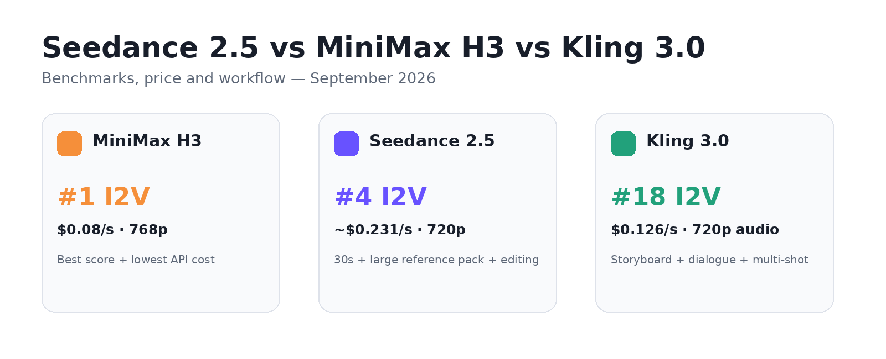
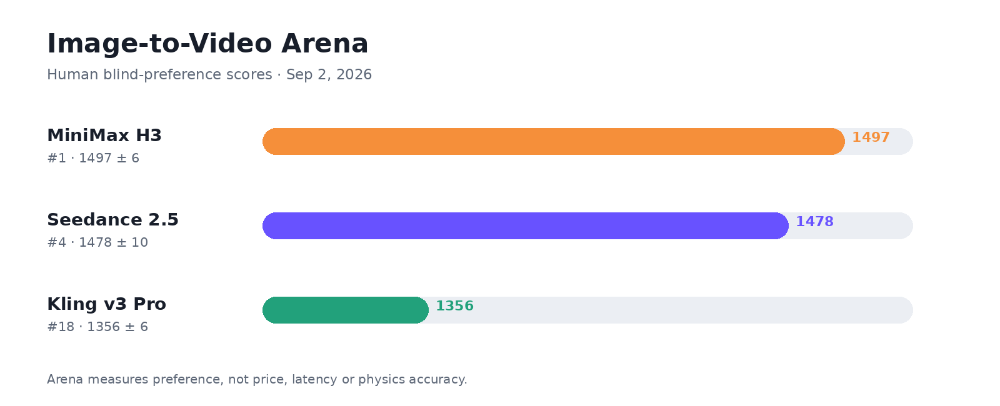
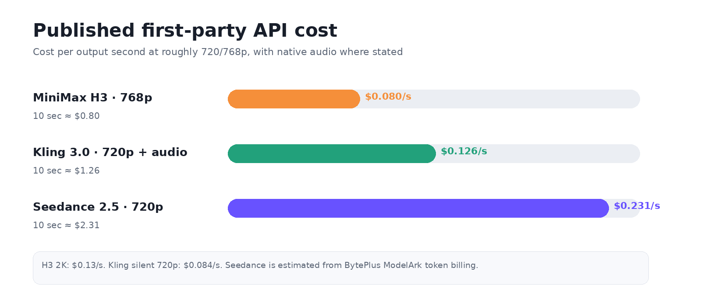

AI VIDEO MODEL COMPARISON ·
Short answer: H3 leads the image-to-video Arena snapshot used here and has the lowest published API price in this comparison. Seedance 2.5 supports 30-second generation, a much larger set of references and timestamp editing. Kling 3.0 focuses on storyboards, dialogue and multi-shot scenes.

Quick comparison
Model | Arena I2V | Max clip | 10s API cost* | Use it for |
|---|---|---|---|---|
MiniMax H3 | 1497 ±6 (#1) | 15 sec | $0.80 | I2V, low cost, open weights |
Seedance 2.5 | 1478 ±10 (#4) | 30 sec | ≈$2.31 | Long clips, references, editing |
Kling 3.0 | 1356 ±6 (#18) | 15 sec | $1.26 audio | Storyboard, dialogue, multi-shot |
*Price basis: published first-party API rates at 720p/768p. Seedance is a 720p estimate based on BytePlus ModelArk token billing without video input (assuming 1280×720 at 24 fps). H3 is 768p; Kling is 720p with native audio. These are the closest public rates for comparison, though the output specifications differ.
Benchmarks: H3 wins I2V; Seedance leads this group in editing
Arena.ai’s Sep 2 image-to-video snapshot puts H3 at 1497 ±6 (#1), Seedance 2.5 at 1478 ±10 (#4), and Kling v3 Pro at 1356 ±6 (#18).

The other tasks are closer. On Sep 4 text-to-video, Seedance 2.5 scored 1482 ±12 (#6) and H3 1462 ±10 (#8). On the Aug 26 video-editing snapshot, Seedance 2.5 was #2 at 1410 ±26, H3 #3 at 1392 ±19, and Kling O3 Pro #8 at 1255 ±11.
Price: H3 is the cheapest
At roughly comparable resolutions, a 10-second clip costs about $0.80 with H3, $1.26 with Kling 3.0 and native audio, or $2.31 with Seedance 2.5, based on published first-party API rates.

- MiniMax H3: $0.08/s at 768p; $0.13/s at 2K.
- Kling 3.0: $0.126/s at 720p with native audio; $0.084/s without audio.
- Seedance 2.5: about $0.231/s on BytePlus ModelArk, assuming 1280×720 output at the model’s fixed 24 fps, using the official $10.70/M-token rate.
BytePlus has different billing routes. The managed LAS operator lists Seedance 2.5 at about $0.462/s for 720p with no input video. ModelArk direct inference is cheaper. The table above uses ModelArk.
Seedance 2.5: pay more for control
- Up to 30 seconds in one generation, plus two extensions.
- Up to 30 images, 10 video clips and 10 audio clips in one request.
- Timestamp-level edits, green screen, camera-perspective edits and clay-model reference.
- Arena: #4 I2V, #6 T2V, #2 video editing in the snapshots above.
Pick it when: you need a 20 to 30 second scene, many references, or the ability to revise part of a clip without regenerating the whole thing.
Cost trade-off: the direct 720p rate is about 2.9× H3’s 768p rate.
MiniMax H3: the best value here
- #1 on the current I2V Arena snapshot.
- $0.08/s at 768p and $0.13/s at 2K.
- 4–15 second clips, 24 fps, native 32 kHz stereo audio.
- Up to 9 images, 3 videos and 3 audio files in reference mode.
- 33B base weights are open for local deployment and tuning.
Pick it when: image-to-video quality or cost matters most, or you need open weights.
Limit: clips are limited to 15 seconds. The initial open release also excludes MiniMax’s hosted Context-IR preprocessing and 2K regeneration components.
Kling 3.0: use it when the shot list matters
- Up to 15 seconds per generation.
- Multi-shot storytelling and storyboard control.
- Native dialogue in English, Chinese, Japanese, Korean and Spanish, plus accents and Chinese dialects.
- 720p API rate: $0.126/s with native audio; $0.084/s without audio.
Pick it when: your scenes follow a shot list, dialogue beats and camera directions.
Limit: its public I2V score in this comparison is below H3 and Seedance 2.5.
Which one should you choose?
Priority | First model to test |
Lowest first-party API cost | MiniMax H3 |
Best current I2V Arena score | MiniMax H3 |
30-second single generation | Seedance 2.5 |
Large mixed reference pack | Seedance 2.5 |
Targeted video edits | Seedance 2.5 |
Storyboard + multi-shot dialogue | Kling 3.0 / Omni |
Open weights | MiniMax H3 |
For a default model, choose H3 for value and I2V, or Seedance 2.5 for production control. Kling 3.0 is a more specialized choice for scenes planned around a storyboard. |
Sources
- ByteDance Seed — Seedance 2.5 launch
- BytePlus ModelArk — Seedance 2.5 pricing
- BytePlus — Seedance billing formula / LAS pricing
- MiniMax — H3 launch + specs
- MiniMax API — H3 pricing
- Kuaishou — Kling 3.0 launch
- Kling AI — developer API pricing
- Arena.ai — current video leaderboards
Price check: September 13, 2026. Recheck API rates before a large batch.